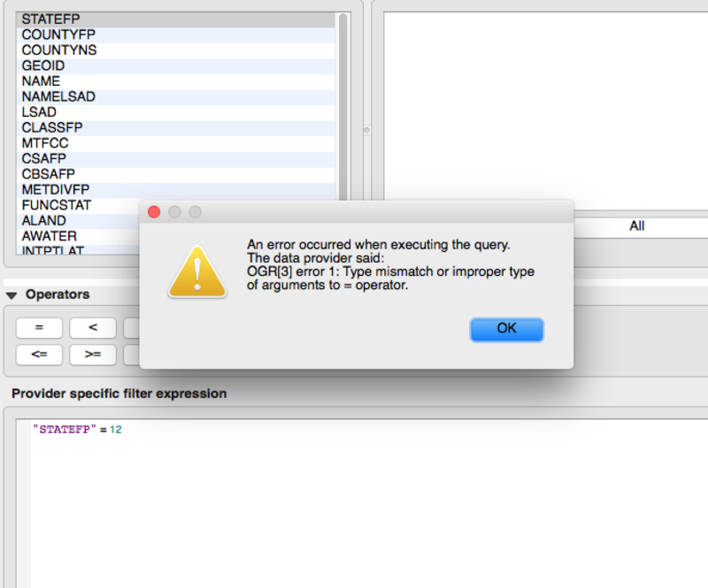

Outline
- Filtering and saving as new shapefiles
- Aggregating data
- Computing new fields
- Projections
- Hex bins
- Preparing data for online display
Here are the notes from the first QGIS session.
Here's a list of other QGIS classes happening at NICAR17.
Filtering and saving new shapefiles
More often than not, you're going to get more data than you want to use. For example, we've got county data for the entire United States, but we're just looking at Florida accidents.
Instead of making QGIS process that huge shapefile every time we make a change, let's filter out all the counties outside of Florida.
Open a new map. Go to Project > Project Properties and check Enable 'on the fly' CRS transformation.
Add US counties. Add vector layer tl_2015_us_county.shp to the map.
Filter. As with most things in QGIS, there is more than one way to filter a shapefile. I'll show you my two favorites.
Select and save
Right click the tl_2015_us_county.shp layer and select Open Attribute Table.
In the top menu bar of the attribute table pop up you should see an icon that looks like an E on top of a yellow square.  . Click that.
. Click that.
You should get another popup with some drop down options and a large textarea. Click on Fields and Values. What drops down should look familiar to you: it's all the available fields on this shapefile. We're only interested in the first one though, STATEFP. Give that field a double click and you should see it appear in the textarea to the left. Then, type an equals (=) sign and number 12. The whole equation is STATEFP = 12
Click "Select".
PROTIP: If you're trying to filter by a field but you don't know all the values available to you in that field, QGIS will let you know.

QGIS is a subtle beast. Clicking "Select" seemingly does nothing, but if we close out of this popup and the attribute table popup, and zoom into Florida on our U.S. counties shapefile, you'll see she's all yellow! That means we've selected all the counties in Florida.
Now we want to save this selection as its own shapefile, so right click the U.S. counties shapefile again and select "Save as...".
- Filter = ESRI Shapefile - there lots of options but let's stick with the shapefile for now.
- Save as - Save your new shapefile in its own folder with a name that is both descriptive of WHERE IT CAME FROM and WHAT IT IS NOW. I'm going to call mine
tl_2015_fl_countybecause that reminds we that I got this original counties shapefile from the Census Bureau (tigerline) and that it's now a Florida-specific counties shapefile. Naming is important. - CRS - Leave as is for now.
- Save only selected features - If we don't do this, we're just saving our original U.S. counties shapefile as a copy of itself.
- Add saved file to map
Now we have just the state of Florida as its own shapefile.
Option 2:
Right click the tl_2015_us_county.shp layer and select "Filter".
You should see a very similar popup to the one we had before. And we're going to do just what we did last time, enter STATEFP = 12.
With this dialog box we get the option to test our filter, so go ahead and click "Test" once you've entered the query into the filter expression textarea.
You might have received an error message that looks like this:
Sometimes QGIS is a jerkface and it imports numbers as text. All we've got to do to fix this error is add some double quotes around the number 12. Now when we hit "Test" we should get another popup that tells us that "The where clause returned 67 row(s)". This information should make us very happy because there are, in fact, 67 counties in Florida.
Click "OK" and you should see that what was once the U.S. is now only Florida. However, if we removed our tl_2015_us_county.shp layer now and added it back, we'd see that it was once again the entire U.S. We still need to save this as its own shapefile.
Again, as we did before, right click the U.S. counties shapefile and select "Save as...".
- Filter = ESRI Shapefile
- Save as - Save your new shapefile in its own folder with a name that is both descriptive of WHERE IT CAME FROM and WHAT IT IS NOW. I'm going to call mine
tl_2015_fl_countybecause that reminds we that I got this original counties shapefile from the Census Bureau (tigerline) and that it's now a Florida-specific counties shapefile. Naming is important. - CRS - Leave as is for now.
- No need to check Save only selected features
- Add saved file to map
Now we have just the state of Florida as its own shapefile.
Aggregating point data
Last session you saw how to join county accident data to your shapefile. But what if you don't have that county-by-county accident data? Never fear! We can create that data right in QGIS using Points in Polygon.
Let's check out two different takes on aggregating this accident data.
Take 1: Crash-Level Aggregation
Click Vector > Analysis Tools > Points in Polygon
- Input polygon vector layer = our Florida counties
- Input point vector layer = our Florida accidents
- We don't want to change Input point vector layer attributes to aggregate or Statistical method for attribute aggregation right now.
- Output count fieled name - the column name of the new column we'll be creating with this option.
- Output Shapefile > Browse - this allows you to set the path and filename for the shapefile we're creating.
Once you have all that set, click OK.
A new shapefile should have been added to our map. If we open up its attribute table we should see our new column (PNTCNT) at the end. The value in this column corresponds to the number of accidents in each county.
Take 2: Fatality-Level Aggregation
The above analysis is good if we want to see our data in terms of accidents, but what if we want to visualize it in terms of deaths?
Let's go back into that Vector > Analysis Tools > Points in Polygon section.
- Input polygon vector layer = our Florida counties
- Input point vector layer = our Florida accidents
- Input point vector layer attributes to aggregate - check FATALS
- Statistical method for attribute aggregation = sum
- Output count fieled name - the column name of the new column we'll be creating with this option.
- Output Shapefile > Browse - this allows you to set the path and filename for the shapefile we're creating.
Once you have all that set, click OK.
Open the newly added shapefile attribute table. You'll see we've now got two additional columns: PNTCNT and FATALS_sum.
- PNTCNT tells us how many accidents happened in the county and
- FATALS_sum tells us how many fatalities happened in the county.
Computing New Fields
At this point, we could export our data as a CSV, bring it into an editor like Excel, and calculate things like percent of accidents that involve drunk drivers. Buy go through all those steps. Let's do it all in QGIS!
Open a new QGIS map
Add the Florida counties shapefile you created earlier
Add the accidents data
Filter the accidents data to include only accidents that involve a drunk driver
Save filtered data as its own shapefile called dd-accidents.shp. Make sure to add it to the map when saving.
Clear the filter on your original accidents data so you now have two accidents shapefiles on your map: all accidents and drunk-driving accidents.
Follow the Crash-Level Aggregation steps above to create a new Florida counties shapefile that counts total accidents per county:
- Input polygon vector layer = Florida counties
- Input point vector layer = all accidents
- Input point vector layer attributes to aggregate - don't check anything
- Statistical method for attribute aggregation = sum
- Output count fieled name = totalCNT
- Output Shapefile =
accidents-in-county.shp
Create another accident aggregation shapefile, this time using the newly create accidents-in-county.shp and the dd-accidents.shp
- Input polygon vector layer =
accidents-in-county.shp - Input point vector layer =
dd-accidents.shp - Input point vector layer attributes to aggregate - don't check anything
- Statistical method for attribute aggregation = sum
- Output count fieled name = ddCNT
- Output Shapefile =
dd-accidents-in-county.shp
Open the attribute table of the shapefile we just created - dd-accidents-in-county.shp. It should have two columns at the end: totalCNT and ddCNT.
Click the Open Field Calculator button 
Create a new field that calculates the percent of accidents that involve drunk drivers by county:
- Create a new field - check this
- Output field name = percDD
- Output field type = Decimal number (real)
- Output field length = 10
- Precision = 5
- Expression =
("ddCNT" / "totalCNT")*100
Click OK.
When you open the attribute table on dd-accidents-in-county.shp, you should another custom column: percDD
Projections
And now let's talk about everyone's favorite mapping topic: projections. Some year maybe we'll get someone really smart to teach a session on projections alone. But this is not that year.
Today, we'll just go over the practical side of projecting. The stuff that'll help you stay sane as you work with data in QGIS.
On The Fly Projecting
On-the-fly projecting is QGIS's way of trying to make your life easier. It allows you to add shapefiles of different projects to the same map and they appear inline. HOWEVER, when you're trying to do proximity analyses, like calculating distance or area, you're gonna be in a world of pain if you rely on on-the-fly projecting.
So let's see how you project shapefiles correctly in QGIS.
Projecting layers
- Start a fresh map
- Add your Florida shapefile
- Right click the Florida layer and select Save as...
- Format = ESRI Shapefile
- Save as =
tl_2015_fl_cnty_UTM16.shp - CRS = click

- Filter for
26916 - Select CRS
NAD83 / UTM zone 16N - Click OK
- Filter for
- Add saved file to map = checked
- Click OK
You just projected that Florida shapefile into a new projection!
Repeat the above steps for our accidents data. Change the filename of course.
You'll see that when QGIS adds our new shapefiles to the map, it doesn't appear that anything has changed. But trust me, it has. You can't see it, but the way that these two shapefiles related to each other is vastly different from what it was before we projected the two layers.
Here's a pretty good read on projections: what the differences are, common problems, how to work with them and more.
Hexbins
So, back to some fun stuff. Just before, we did a county-by-county analysis of accidents. But counties are kind of an arbitrary unit of measure when we're talking about density of accidents. As you can see, some counties are much larger than others. That is likely to influence location-based analysis, i.e. larger counties will obviously have more accidents. So let's look at a unit that is more equally balanced.
Install MMQGIS Plugin. First, let's install a plugin that will help us create the hex bins: MMQGIS.

- Go to
Plugins > Manage and Install Plugins... - Search for mmqgis and install the plugin
- Once installed, you should see an additional top-level menu item: MMQGIS.
Add shapefiles to new map. Next, we need to add our projected shapefiles to a new map. Create a new map and add our projected Florida counties shapefile and our projected Florida accidents shapefile. This analysis will not work if we don't use our PROJECTED shapefiles.
Create hex bins. Select MMQGIS > Create > Create Grid Layer.

- Shape Type = Hexagons
- Units = Layer Units
- X Spacing and Y Spacing - this tells QGIS how large to make our hex bins. For these calculations, I'm 100% in debt to Michael Corey's 2015 QGIS presentation... I'm actually just gonna quote him:
"For the purposes of this exercise, let's say that we want hexagonal grids with an area of 20 square miles. Remember, the unit of our projection is meters, so we'll convert everything to meters. Twenty square miles is 51,799,800 square meters. We can use [this calculator](https://rechneronline.de/pi/hexagon.php) to figure out what short diagonal length will yield a hexagon with an area of 51,799,800 square meters. Spoiler alert: it's ~7,734 meters."
So, enter7734for our Y Spacing. The X Spacing we can leave. It will follow suit. - Output Shapefile =
florida-grid.shp
Perform points in polygon. This time, we're going to use the grids shapefile as our Input polygon vector layer.
- Click
Vector > Analysis Tools > Points in Polygon - Input polygon vector layer =
florida_grid.shp - Input point vector layer = Florida accidents
- We don't want to change Input point vector layer attributes to aggregate or Statistical method for attribute aggregation right now.
- Output count field name - the column name of the new column we'll be creating with this option.
- Output Shapefile > Browse =
florida-accidents-in-bins.shp
Filter out bins without accidents.
- Right click
florida-accidents-in-bins.shp - Expression =
"PNTCNT" > 0 - Click OK
Color-code bins so we can see what's up!
Preparing data for online display
Saving geojson
For most interactive maps, you're going to want to save your map data as a geojson file. I usually display interactive mapping data in Leaflet.js.
- Right click the shapefile and select Save as...
- Format = GeoJSON
- Save as - you can save as the same filename, but it'll have the
geojsonfile extension if you set Format to GeoJSON. - CRS - the CRS is better set to something like
WGS 84. This has to do with the default projection of mapping programs like Leaflet.
Simplifying Geometries
Simplifying geometries is sometimes necessary when you're preparing your geographic data for display online. Overly-detailed data can cause programs like Leaflet.js to load suuuuuuuper slowly.
There are ways of doing this in QGIS, but honestly... using MapShaper is much easier and more efficient. MapShaper lets you see how your adjustments are going to affect the quality of you shapefile in realtime.